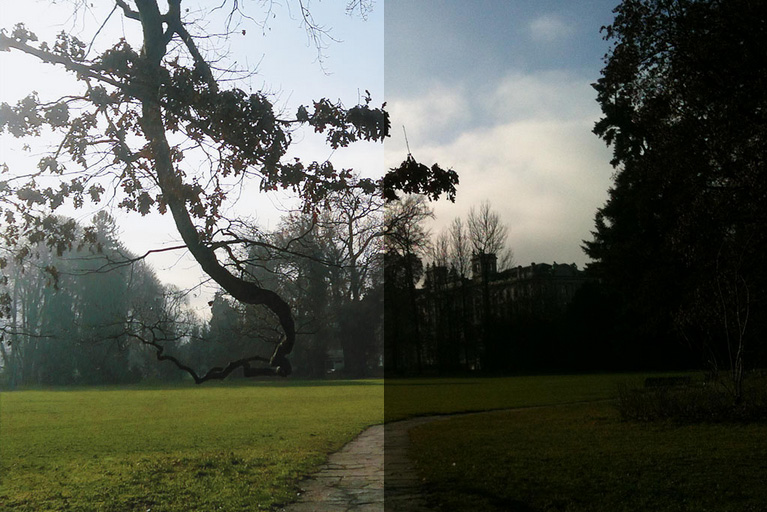
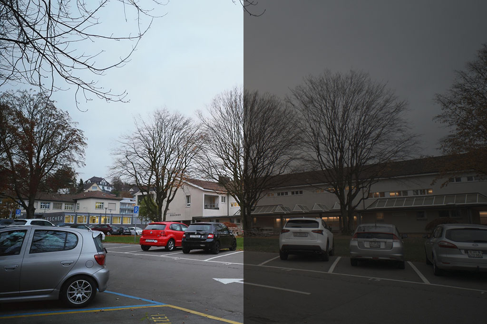

ETH Zurich
Switzerland, 2026
Over the past years, mobile AI-based applications are becoming more and more ubiquitous. Various deep learning models can now be found on any mobile device starting from smartphones running LLMs, image enhancement, portrait segmentation, face recognition and neural generation models, to IoT platforms performing real-time image classification or smart-TV boards coming with sophisticated image super-resolution algorithms. The performance of mobile NPUs and DSPs is also increasing dramatically, making it possible to run complex deep learning models and to achieve fast runtime in the majority of tasks.
While many research works targeted at efficient deep learning models have been proposed recently, the evaluation of the obtained solutions is usually happening on desktop CPUs and GPUs, making it nearly impossible to estimate the actual inference time and memory consumption on real mobile hardware. To address this problem, we introduce the first Mobile AI Workshop, where all deep learning solutions are developed for and evaluated on mobile devices.
Due to the performance of the last-generation mobile AI hardware, the topics considered in this workshop will go beyond the simple classification tasks, and will include such challenging problems as image denoising, efficient LLM and Stable Diffusion, learned image ISP pipeline, smartphone photo enhancement, real-time image and video super-resolution. All information about the challenges, papers, invited talks and workshop industry partners is provided below.
CHALLENGES: ONGOING
4K Image Super-Resolution
 | Evaluation Platform: Snapdragon 8 Elite G5 NPU |
4K Image Super-Resolution
| Evaluation Platform: Dimensity 9500 NPU |
Video Super-Resolution

| Evaluation Platform: Arm Mali / Adreno GPU |
Efficient LLMs

| Evaluation Platform: Raspberry Pi 8GB |
Efficient Stable Diffusion
| Evaluation Platform: Apple M4 Neural Engine |
Image Denoising

| Evaluation Platform: Arm Mali / Adreno GPU |
Bokeh Effect Rendering

| Evaluation Platform: Arm Mali / Adreno GPU |
RGB Photo Enhancement

| Evaluation Platform: Arm Mali / Adreno GPU |
Learned Smartphone ISP

| Evaluation Platform: Arm Mali / Adreno GPU |
MAI 2025 CHALLENGE REPORTS
Image Super-Resolution
| Evaluation Platform: Google Tensor TPU |
RGB Photo Enhancement
| Evaluation Platform: Arm Mali / Adreno GPU |
Learned Smartphone ISP
| Evaluation Platform: Arm Mali / Adreno GPU |
PREVIOUS CHALLENGES (2022)
Video Super-Resolution
| Evaluation Platform: MediaTek Dimensity APU |
| Powered by: |  |
Image Super-Resolution
| Evaluation Platform: Synaptics Dolphin NPU |
| Powered by: |  |
Learned Smartphone ISP
| Evaluation Platform: Snapdragon Adreno GPU |
| Powered by: |  |
Bokeh Effect Rendering
| Evaluation Platform: Arm Mali GPU |
| Powered by: |  |
Depth Estimation

| Evaluation Platform: Raspberry Pi 4 |
| Powered by: |  |
PREVIOUS CHALLENGES (2021)
Learned Smartphone ISP
| Evaluation Platform: MediaTek Dimensity APU |
| Powered by: | |
Image Denoising
| Evaluation Platform: Exynos Mali GPU |
| Powered by: |  |
Image Super-Resolution
| Evaluation Platform: Synaptics Dolphin NPU |
| Powered by: | |
Video Super-Resolution
| Evaluation Platform: Snapdragon Adreno GPU |
| Powered by: | |
Depth Estimation
| Evaluation Platform: Raspberry Pi 4 |
| Powered by: | |
Camera Scene Detection

| Evaluation Platform: Apple Bionic |
| Powered by: |  |
CALL FOR PAPERS
Being a part of CVPR 2026, we invite the authors to submit high-quality original papers proposing various machine learning based solutions for mobile, embedded and IoT platforms. The topics of interest cover all major aspects of AI and deep learning research for mobile devices including, but not limited to:
• Efficient deep learning models for mobile devices |
• Image / video super-resolution on low-power hardware |
• Efficient LLM architectures for mobile devices |
• Optimized Stable Diffusion for mobile devices |
• General smartphone photo and video enhancement |
• Deep learning applications for mobile camera ISPs |
• Fast image classification / object detection algorithms |
• Real-time semantic image segmentation |
• Image or sensor based identity recognition |
• Activity recognition using smartphone sensors |
• Depth estimation w/o multiple cameras |
• Portrait segmentation / bokeh effect rendering |
• Perceptual image manipulation on mobile devices |
• NLP models optimized for mobile inference |
• Artifacts removal from mobile photos / videos |
• RAW image and video processing |
• Low-power machine learning inference |
• Machine and deep learning frameworks for mobile devices |
• AI performance evaluation of mobile and IoT hardware |
• Industry-driven applications related to the above problems |
To ensure high quality of the accepted papers, all submissions will be evaluated by research and industry experts from the corresponding fields. All accepted workshop papers will be published in the CVPR 2026 Workshop Proceedings by Computer Vision Foundation Open Access and IEEE Xplore Digital Library. The authors of the best selected papers will be invited to present their work during the actual workshop event at CVPR 2026. The detailed submission instructions and guidelines can be found here.
SUBMISSION DETAILS @ CVPR
| Format and paper length | A paper submission has to be in English, in pdf format, and at most 8 pages (excluding references) in double column. The paper format must follow the same guidelines as for all CVPR 2026 submissions: https://cvpr.thecvf.com/Conferences/2026/AuthorGuidelines |
| Author kit | The author kit provides a LaTeX2e template for paper submissions. Please refer to this kit for detailed formatting instructions: https://github.com/cvpr-org/author-kit/archive/refs/tags/CVPR2026-v1(latex).zip |
| Double-blind review policy | The review process is double blind. Authors do not know the names of the chair / reviewers of their papers. Reviewers do not know the names of the authors. |
| Dual submission policy | Dual submission is allowed with CVPR 2026 main conference only. If a paper is submitted also to CVPR and accepted, the paper cannot be published both at the CVPR and the workshop. |
| Proceedings | Accepted and presented papers will be published after the conference in CVPR Workshops proceedings together with the CVPR 2026 main conference papers. |
| Submission site * | https://cmt3.research.microsoft.com/MAI2026 |
| * The Microsoft CMT service was used for managing the peer-reviewing process for this conference. This service was provided for free by Microsoft and they bore all expenses, including costs for Azure cloud services as well as for software development and support. |
TIMELINE
| Workshop Event | Date [ Pacific Time, 2026 ] |
|---|---|
| Website online | January 20 |
| Paper submission server online | February 9 |
| Paper submission deadline [early submission] | March 10 |
| Paper decision notification [early submission] | March 31 |
| Paper submission deadline [late submission & challenge papers] | March 24 |
| Paper decision notification [late submission] | March 31 |
| Camera ready deadline | April 10 |
| Workshop day | June (TBA) |
| Challenges | Date [ Pacific Time, 2026 ] |
|---|---|
| Website online | January 15 |
| Validation server online | February 1 |
| Test phase begins, test data released | March 10 |
| Test phase submission deadline | March 17 |
| Fact sheets, code/executable submission deadline | March 17 |
| Preliminary test results release to the participants | March 19 |
| Paper submission deadline for entries from the challenges | March 24 |
DEEP LEARNING ON MOBILE DEVICES: TUTORIAL
Have some questions? Leave them on the AI Benchmark Forum
RUNTIME VALIDATION
In each MAI 2026 challenge track, the participants have a possibility to check the runtime of their solutions remotely on the target platforms. For this, the converted TensorFlow Lite models should be uploaded to a special web-server, and their runtime on the actual target devices will be returned instantaneously or withing 24 hours, depending on the track. The detailed model conversion instructions and links can be found in the corresponding challenges. Besides that, we strongly encourage the participants to check the speed and RAM consumption of the obtained models locally on your own Android devices. This will allow you to perform model profiling and debugging faster and much more efficiently. To do this, one can use AI Benchmark application allowing you to load a custom TFLite model and run it with various acceleration options, including CPU, GPU, DSP and NPU: 1. Download AI Benchmark from the Google Play / website and run its standard tests. 2. After the end of the tests, enter the PRO Mode and select the Custom Model tab there. 3. Rename the exported TFLite model to model.tflite and put it into the Download folder of your device. 4. Select your mode type, the desired acceleration / inference options and run the model. You can find the screenshots demonstrating these 4 steps below:

CONTACTS
 |
Computer Vision Lab ETH Zurich, Switzerland andrey@vision.ee.ethz.ch |
 |
Computer Vision Laboratory University of Würzburg, Germany radu.timofte@uni-wuerzburg.de |
ETH Zurich
Switzerland, 2026